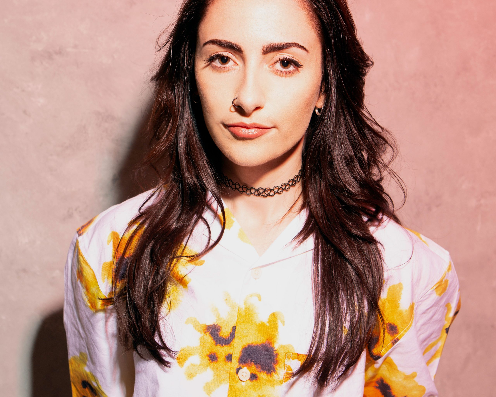

DJs Holly Lester

Holly Lester is an electronic dance music disc jockey from County Armagh, Northern Ireland. Lester is co-founder of the Free The Night advocacy organisation aimed at boosting the night-time economy in Northern Ireland.
Holly Lester link